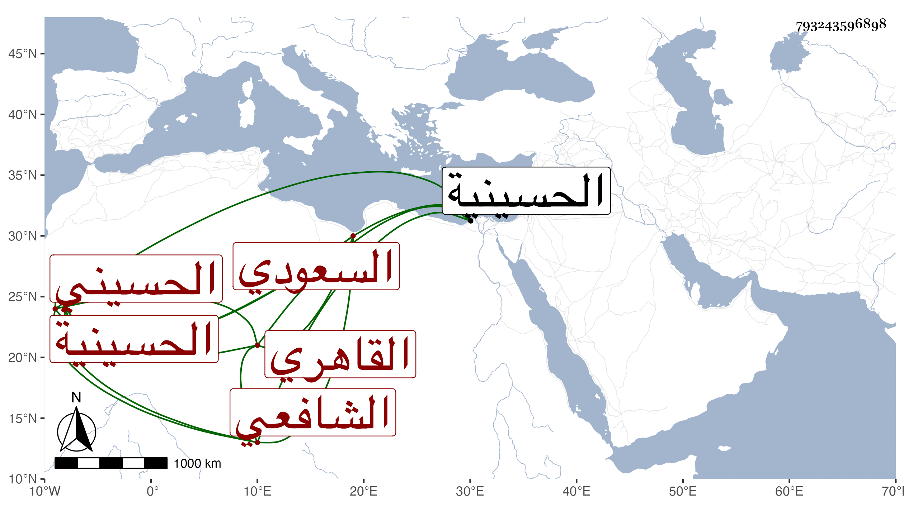

0902Sakhawi.DawLamic.ITO20230111-ara1.EIS1600.793243596898
Biography ID: 793243596898
271
عمر بن حسن بن علي بن الشرف عيسى السراج بن البدر القاهري الحسيني سكنا الشافعي السعودي ويعرف بابن شهبة بمعجمة ثم هاء وموحدة مصغر وهي جدة أبيه فيما قال لنا ، وأنه ولد سنة أربع وثمانين وسبعمائة فالله أعلم . كان محبا في سماع الحديث أكثر عن شيخنا ومن قبله عن الزين الزركشي وآخرين ، وأجازه أبوه بالباس الخرقة وهو قد لبسها من الجمال عبد الله بن محمد بن موسى بن خليفة بن إبراهيم الدسوقي ، وسمع في سنة عشرين على الكمال محمد بن الضيا مخلص بن محمد الطيبي وأبي العباس أحمد بن محمد بن إيدمر الأبار تصنيف شيخهما صدقة العادلي منها الطريق وحدث به عنهما سمعه عليه الكمال إمام الكاملية وغيره وكان هو ابن خالة الكمال وممن يكثر التردد إلي بحيث سمع علي القول البديع تصنيفي واتجر بسوق العبي وقتا وكان شيخ مقام شرف الدين بالحسينية كأبيه ، مات في ذي الحجة سنة إحدى وسبعين رحمه الله .
